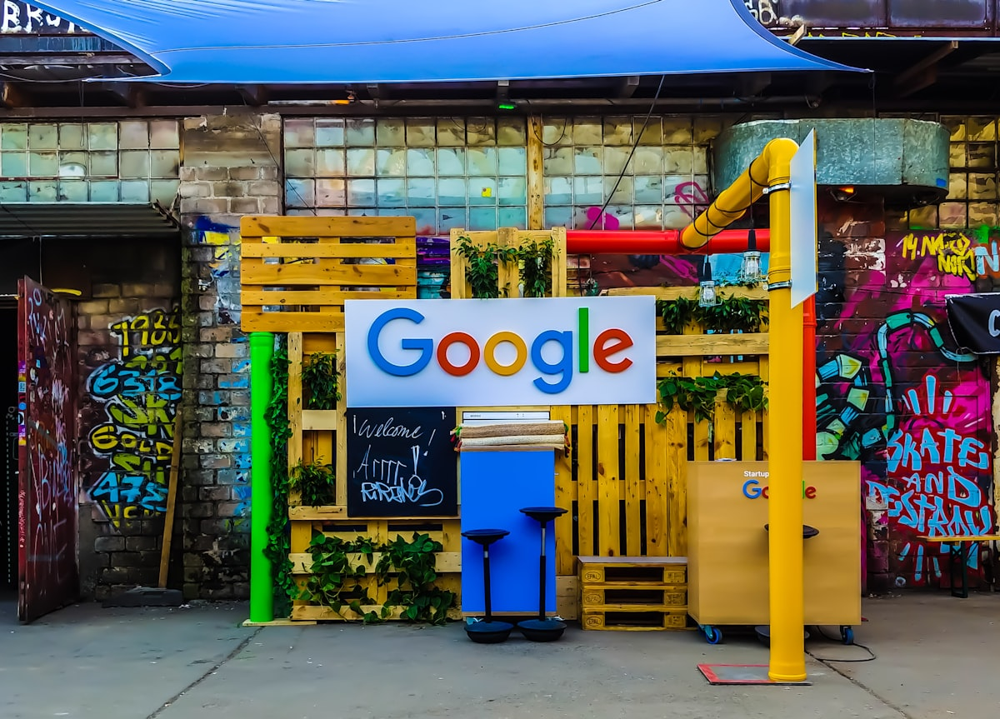

Every agent action becomes a receipt your auditor can replay.
Thunderline is the governed operating environment. A ThunderBlock is one managed workspace inside it. Prism is the operator surface. ACORN is the first live application proving the stack.
One governed spine across thirteen domains.
Consequential actions pass the PolicyGate and seal an ActionReceipt linked into the lineage graph. The visual below is a conceptual rendering, not live telemetry. Its full-screen home is the interactive Three.js scene.
Start from the question you have to answer.
Whether you are defending an audit boundary, wiring Elixir capability tokens, or evaluating the company, every path goes straight to verifiable artifacts.
Engineering VP / Head of Platform
Shipping agentic workflows into regulated ops (healthcare, telecom, energy, finance, defense-adjacent) where compliance asks how you replay and prove every tool call.
Hands-On Platform / Agent-Infra Lead
You want to know whether Thunderline is a real Elixir/OTP substrate. Read 10 snippets written against the real module names — policy gate, receipt seal, lineage edge, replay query — with private modules marked as such.
Early-Stage Investor / Design-Partner Exec
Looking for founder bios, corporate structure, what is live versus research, and direct founder contact without theatrical password gates.
What we can prove today — and what we don’t claim yet.
No customer logos we don't have. No certifications we don't hold. Each item below either links to the architecture or states its status plainly.
SOC2 Type II: target Q1 2027
HIPAA: TBD. FedRAMP: not applicable at current stage. We hold no compliance certification today. No regulatory-compliance guarantee: Thunderline is designed for governed workflows; your compliance posture remains yours. Current state: see /security for architecture →
17-field @seal_fields over the ActionReceipt
Verifiable. Replay-tested in the trust-spine merge gate. Seals are unkeyed; they raise the price of tampering, not forbid it. Receipt-spine architecture on /security → · field list in /docs →
29-agent refute-by-default anneal (2026-07-30)
31 defects surfaced; 11 high-severity. Open hazard classes stay listed in public, including fail-open at membranes (GH #3081) and upserts carrying authority into ON CONFLICT (GH #3073). Current state on /security →
This site is Apache 2.0
Source at github.com/Thunderblok/Landing. Thunderline platform code is private pending launch.
Beta — no production customers yet
We have no named production customers, no public SLA, and no third-party penetration-test report. Design-partner slots are open: email mo@okoholding.com.
Four honest stops across the stack
Four-stop reduction of the 11-label public maturity axis: research · design · beta · live
Governed operating environment & 13-domain Elixir/OTP spine.
Single-tenant managed workspace (hive) inside Thunderline.
Phoenix LiveView operator surface for approvals & receipt inspection.
First live vertical application proving the governed stack end-to-end.
Hermetic WASM cell: wasmtime NIF, zero-import check, fuel + wall-clock bounds.
Field evidence & vision-analysis intake pipelines under governance.
Retrieval and structured synthesis research track.
Long-horizon multi-hive planning research track.
Powerful agents. Scattered work.
Capable agents alone are not a team. Without shared memory, roles, and rules, work fragments across isolated chats. A ThunderBlock makes work coherent.
The ThunderBlock is the hive
Managed workspace uniting people, agents, context, rules, and work history.
Agents are the specialized workers
Role-bound agents act on shared context toward a common objective.
The human is the operator
The operator defines intent, grants authority, and gates every consequential action.
What a ThunderBlock gives the swarm
One foundation turns isolated agents into a team:
- A home — one named workspace
- Shared memory — durable context across sessions
- Shared operating context — goals, roles, and state
- Rules of engagement — access, action, and escalation limits
- Oversight and receipts — human review and verifiable records
A managed hive for human-agent work.
A ThunderBlock unites agent identities, roles, context, and boundaries under human stewardship.
The hive is the product
Thunderline connects ThunderBlocks with memory, communication, governance, and execution.
Prism gives operators a live visual window into hive state and active work.
The product spine
- Remember — retain context across sessions
- Coordinate — align agents on shared roles
- Govern — enforce permissions and approvals
- Operate — run authorized tool workflows
- Observe — inspect live work state
- Trace — seal receipts and lineage
The operator decides. The swarm works.
Humans hold intent and authority; agents bring speed, specialization, and continuity within one operating picture.
Operators set the objective, boundaries, and mandatory approval gates.
Human-ledResearch, writing, analysis, and tool-use agents execute distinct roles toward one goal.
Role-awareGoals, decisions, references, and state live in one shared source.
Shared contextPrism makes work state, agent activity, and key decisions legible.
Operator viewAt consequential boundaries, the swarm packages evidence and hands decisions to the operator.
Review pointDurable operating history lets the next human or agent resume without rebuilding context.
Durable memoryOne team, one operating space
Direct specialized agents from one workspace instead of juggling isolated tabs and prompts.
Where a shared hive helps.
ThunderBlocks fit workflows spanning agents, tools, and human sign-off. Each pattern is scoped per engagement.

Field Operations
Coordinate checklists, field evidence, and human closeout.
Research
Split discovery, source review, and synthesis across role-bound agents.
Structured Intake
Package intake data for human handoff with full provenance.
Document Review
Index large evidence sets, surface gaps, and route findings for review.
Customer Operations
Draft responses and log records while humans own customer decisions.
Project Delivery
Unify plans, status, artifacts, and specialist output in one context.
Quality Review
Compare outputs and flag exceptions for human sign-off.
Knowledge Operations
Retain decisions, references, and working memory across multi-month programs.
Case Preparation
Assemble traceable case packets while keeping final judgment human.
Workflow Coordination
Hand bounded tasks across roles with clear state lineage.

Operations Support
Monitor queues, stage actions, and escalate exceptions from one console.
Scoped Environments
Tailor access, retention, oversight, and deployment boundaries to the mission.
Coordination needs boundaries.
Every ThunderBlock makes authority explicit, keeps humans at critical decision gates, and seals verifiable evidence. Partnerships follow the same rule.
Controls, records, and connectors are scoped per engagement. Partnership programs open selectively — start a conversation.
The hive remembers.
A ThunderBlock retains mission scope, ownership, prior decisions, open questions, and active boundaries.
A workspace the operator can steward
Preserve team context, governance boundaries, and operating records on your terms.
Five rules for useful agent teams
Coordination works only when operators understand state, control boundaries, and trust records.
-
The operator decides.
Agents research, prepare, and recommend; humans own consequential approvals.
-
Roles and boundaries are explicit.
Every participant knows its access scope, action limits, and escalation triggers.
-
Shared context beats repeated prompting.
Teams build on durable goals, decisions, and state instead of re-prompting.
-
Important work leaves evidence.
Receipts and lineage record what happened, what informed it, and who approved it.
-
Claims follow proof.
We separate live capabilities, active builds, and future design direction.
Who we are
OKO Holding Corporation builds ThunderBlock hives and the Thunderline substrate that connects them.
Prompts are ephemeral; operations are durable. We build the workspace where human-agent teams retain context, enforce rules, and prove their work.
Moises “Mo” Perez
U.S. Army veteran and systems builder working on OKO's vision, product doctrine, and strategy — turning complex architectures into executable missions.
David Thrower
Machine-learning research, model search, and the Cerebros–Thunderline integration boundary.
Jonathan Castoire
Profile forthcoming.
Headquartered in Jupiter, Florida — building the model-agnostic substrate for human-agent teams.
Early-stage. By request.
We replaced client-side password gates with a plain-text diligence profile covering our named founders, what runs in code today, and explicit non-claims. Full data room and architecture walkthroughs are shared directly.
Materials document OKO / Thunderline in governed beta with canonical four-stop maturity labels (research · design · beta · live).
Bring us one governed workflow.
Bring a workflow spanning people, agents, and external tools. We scope the ThunderBlock, operator authority, PolicyGate rules, and receipt verification for design-partner deployments.
Start with one ThunderBlock. The operator decides; every agent action seals a receipt.
OKO Holding Corporation · Delaware C-Corp · Jupiter, Florida.